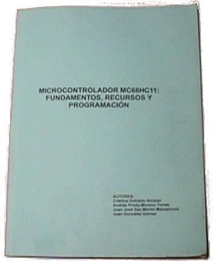

Esta página ya no se mantiene más (02/Mayo/2009)
|
MICROCONTROLADOR MC68HC11: FUNDAMENTOS, RECURSOS Y PROGRAMACIÓN |
|
|
Esta página ya no se mantiene más (02/Mayo/2009) |

Libro en castellano sobre el Microcontrolador 68hc11 de Motorola. Se describe desde un punto de vista práctico, con muchos ejemplos, la arquitectura de este micro y cómo se programa cada uno de los periféricos que incorpora.
Con este libro se pretende cubrir el gran vacío que existe de información en castellano sobre el microcontrolador 68HC11. Está basado en la experiencia que han ido adquiriendo los autores en el desarrollo de aplicaciones digitales. Por ello es eminentemente práctico. Se ha evitado explicar con profundidad los mecanismos internos de funcionamiento, centrándose sobre todo en los conocimientos básicos que hay que tener para poder utilizar todos los recursos internos.
I.S.B.N.: 84-605-8743-6
Depósito Legal: M-10412-1999
Editor: Microbótica, S.L
Imprime: Servicio de Publicaciones. E.T.S.I Telecomunicación. Ciudad Universitaria s/n
Juan González Gómez. Capítulos 1, 3, 5. Apéndices A,B,C,D,E. Apartados: 4.1, 4.2, 4.3, 4.5, 4.6, 4.7, 4.8, 4.9, 4.10.
Andrés Prieto-Moreno Torres. Apartados 4.11 y 4.12
Juan José San Martín. Capítulo 2 y apartado 4.4.
Cristina Doblado Alcázar Corrección de errores y erratas.
Se conceden permisos para copiar, modificar y distribuir este libro, siempre y cuando se mantenga esta nota.
PROLOGO
1.-
INTRODUCCIÓN
2.- ASPECTOS HARDWARE DEL 68HC11
2.1.- El patillaje del 68HC11
2.2.- Pines
de reloj
2.3.- Pines de alimentación
2.4.- Pines de reset
2.5.- Pines de
transmisiones serie asíncronas
2.6.- Pines de los capturadores
2.7.-
Pines de interrupción externa
2.8.- Pines de configuración del modo de arranque
2.9.- Pines de los comparadores
2.10.-
Pines de transmisiones serie síncronas
2.11.- Pines de los puertos de entrada/salida
2.12.- Pines de los buses
2.13.- Pines de
los conversores analógicos/digitales
3.-
PROGRAMACIÓN DE LA CPU DEL 68HC11
3.1.- Los modos de funcionamiento del 68HC11
3.2.- Registros de la CPU
3.3.- Modos de
direccionamiento
3.4.- Juego de
instrucciones
3.5.- INTERRUPCIONES
4.-
RECURSOS DEL 68HC11 Y SU PROGRAMACIÓN
4.1.- El mapa de memoria
4.2.- Puertos de
entrada/salida
4.3.- Transmisiones serie
asíncronas (SCI)
4.4.-
Transmisiones serie síncronas (SPI)
4.5.- Temporizador principal
4.6.-
Interrupciones en tiemo real
4.7.-
Comparadores
4.8.- Capturadores de
entrada
4.9.- Acumulador de pulsos
4.10.- La interrupción externa IRQ
4.11.- Conversor analógico/digital
4.12.- La memoria EEPROM
5.- LA COMUNICACIÓN ENTRE
EL 68HC11 Y EL PC
5.1.-
Introducción
5.2.- El programa de
arranque BOOTSTRAP
5.3.- Dialogando con
el 68HC11
5.4.- El formato .S19 de
Motorola
APENDICE A: Patillaje del 68hc11
APENDICE
B: Numeración del zócalo PLCC de 52 pines
APENDICE
C: Resumen de los registros de control del 68HC11
APENDICE
D: Descripción de todos los registros de control del
68HC11
APENDICE E: Lista de nemónicos del 68HC11
|
FICHEROS PARA DESCARGAR |
|
Microcontrolador 68HC11: Fundamentos, recursos y programación |
|
|
Todos los ejemplos del libro |
CT6811: Tarjeta entrenadora basada en el 6811. Todos los ejemplos del libro ha sido probados en ella.
02/mayo/2009: Página migrada al wiki (Nuevo enlace)
04/Ene/2003: Publicada esta página
A Eduardo Boemo, por realizar la revisión técnica del libro y escribir el prólogo